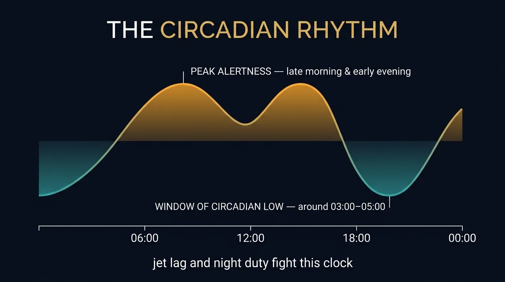
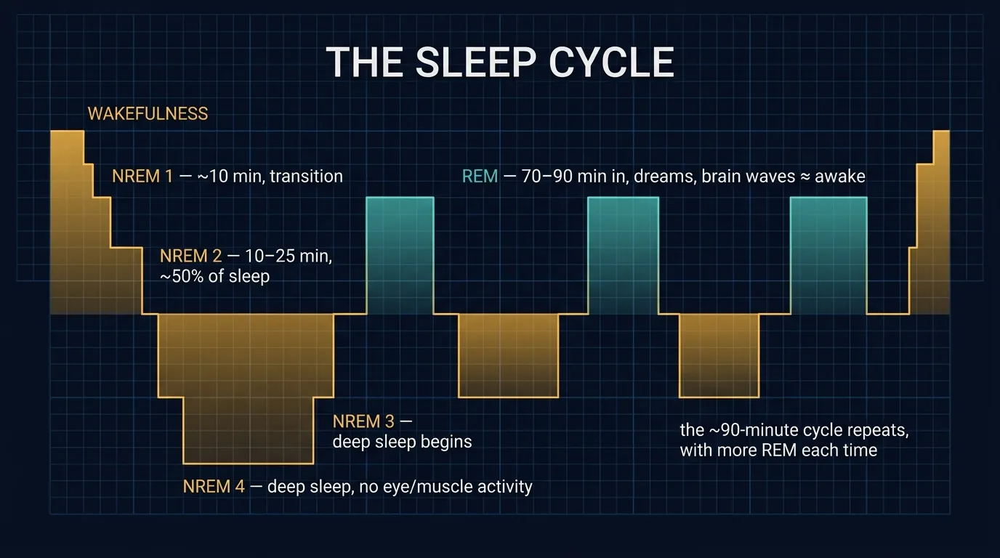

Chapter 24 — The rhythms that govern the aviator: the circadian body clock and its disruption by jet lag and night duty, the architecture of NREM and REM sleep, mental health and its disorders — and the master reference tables for the whole psychology syllabus.

Our bodies are continuously receiving stimuli through our five senses. This information is stored briefly in our sensory memory and, if we perceive it to be important, it is transferred to our short-term memory or Central Decision Maker. Some stimuli are better than others at getting our attention. We can split our attention between several different things by concentrating on them in rapid succession.
The Circadian Circle represents our level of alertness throughout the day. Circadian rhythms are internally generated by a self-sustaining (autonomous) biological clock located in the hypothalamus, which functions as the main control centre for the autonomic nervous system by regulating sleep cycles, body temperature, appetite, etc., and acts as an endocrine gland by producing hormones. It takes into account biological elements such as body temperature, heart rate and blood pressure — which affect our level of alertness during the day.
| Time | Body Event |
|---|---|
| 00:00 | Midnight |
| 02:00 | Deepest sleep |
| 04:30 | Lowest body temperature |
| 06:45 | Sharpest rise in blood pressure |
| 07:30 | Melatonin secretion stops |
| 08:30 | Bowel movement likely |
| 09:00 | Highest testosterone secretion |
| 10:00 | High alertness |
| 12:00 | Noon |
| 14:30 | Best coordination |
| 15:30 | Fastest reaction time |
| 17:00 | Greatest cardiovascular efficiency and muscle strength |
| 18:30 | Highest blood pressure |
| 19:00 | Highest body temperature |
| 21:00 | Melatonin secretion starts |
| 22:30 | Bowel movements suppressed |
As we sleep, our heart rate is lowered and hence our level of alertness is reduced. Blood pressure is also often lowered after mealtimes. Human performance declines at night when the body and mind desire rest.
Melatonin is secreted from the pineal gland principally at night. The hormone is involved in sleep regulation, as well as in a number of other cyclical bodily activities and circadian rhythm in humans.
This circadian rhythm of secretion plays an important role in its hormonal activity. Melatonin is exclusively involved in signalling the 'time of day' and 'time of year' (hence considered to help both clock and calendar functions) to all tissues, and is thus considered to be the body's chronological pacemaker or 'Zeitgeber'.
| Factor | Value / Rule |
|---|---|
| Free-running circadian cycle (no time cues) | ~ 25 hours |
| Cycle with normal time cues | ~ 24 hours |
| Stop-over rule | If stop-over > 24 hours → move to new time as soon as possible |
| Crossing > 3–4 time zones with layover > 24 hours | Keep in swing with rhythm of the departure country for as long as possible; maintain regular living patterns |
| Re-synchronization rate | 1 – 1.5 hours per day |
| Eastbound adaptation | ~ 50 % slower than westbound; 1.5 days per time-zone east |
| Westbound adaptation | ~ 1 day per time-zone |
| Difficulty | Readjustment after a time shift is normally more difficult with flights towards the East |
| Sleep duration | Governed primarily by the point within your circadian rhythm at which you try to sleep |
| Sensorimotor vs intellectual performance | Sensorimotor performance is better in the evening; intellectual performance is better in the morning |
Sleep is basically divided into two components:
| Component | Purpose |
|---|---|
| NREM sleep | Body restoration — repair tissues, build bone and muscle, strengthen immune system |
| REM sleep | Brain restoration — strengthening, refreshing and organizing memory |
NREM sleep is further divided into four stages from lightest to deepest. Both types of sleep are required to recoup physical and mental energy.
| Stage | Description | Duration |
|---|---|---|
| NREM Stage 1 | Transition phase between wakefulness and sleep. Brain activity, eye movement and muscle activity become slower. A person is easily awakened. Waking up in this stage causes a person to feel that he/she has not slept. | 10 minutes each time |
| NREM Stage 2 | Light sleep — the first stage of true sleep. Occupies 50 % of the sleep patterns. Brain activity, eye movement become even slower; cardiac activity decreases. | 10–25 minutes each time |
| NREM Stage 3 | Beginning of deep sleep — slow-wave delta sleep. Brain activity and eye movement approaching zero. If awoken, the person may feel groggy and disoriented for a few minutes. | — |
| NREM Stage 4 | Deep sleep — slow-wave delta sleep. No eye movement or muscle activity. If awoken, the person may feel groggy or disoriented for a few minutes. | — |
As we grow older, the time spent in REM sleep declines from 50 % of our sleep for infants, to 20 % of our sleep for adults.

Mental health problems and disorders among pilots, ATCOs, maintenance and other personnel in aviation may impair performance and therefore be a threat to flight safety.
There may be many reasons why a pilot may be reluctant to discuss mental health problems with the examining physician during the annual medical assessment, including fear of losing his or her licence with both personal and financial costs as a result. This may prevent the pilot from receiving adequate and timely help, and this could potentially make the problems worse and prolong the time for recovery.
Serious mental health disorders (e.g. psychosis) are relatively rare and their onset is difficult to predict. Preventive efforts should be aimed at more common mental health problems such as:
| Topic | Value | Section |
|---|---|---|
| Iconic memory duration | 0.5 – 1 second | 5 |
| Visual channel share of information processing | 70 – 80 % | 5 |
| Short-term memory duration | 10 – 20 seconds | 12 |
| Short-term memory capacity | 7 ± 2 items | 12 |
| Long-term memory capacity | Unlimited (retrieval may fail) | 12 |
| Acceptable workload (crew resources) | ~ 60 % | 11 |
| Human error rate – simple/repetitive | 1 in 100 | 11 |
| Human error rate – after practice | 1 in 1,000 | 11 |
| Startle reflex – motor task recovery | 5 – 10 seconds | 10 |
| Age-related response slowing | 20 – 60 years | 14 |
| Anthropometric design population | Central 90 % (disregard 5% lowest & 5% highest) | 20 |
| Free-running circadian cycle | ~ 25 hours | 23 |
| Cued circadian cycle | ~ 24 hours | 23 |
| Circadian re-sync rate | 1 – 1.5 hours/day | 23 |
| Eastbound adaptation | ~ 1.5 days/time-zone (50% slower than west) | 23 |
| Westbound adaptation | ~ 1 day/time-zone | 23 |
| Stop-over threshold for adjusting to local time | > 24 hours | 23 |
| Lowest body temperature time | 04:30 | 23 |
| Highest body temperature time | 19:00 | 23 |
| Melatonin peak | 02:00 – 04:00 | 23 |
| Melatonin secretion starts | 21:00 | 23 |
| Melatonin secretion stops | 07:30 | 23 |
| NREM Stage 1 duration | 10 minutes | 24 |
| NREM Stage 2 duration / share | 10–25 min / 50 % of sleep | 24 |
| REM onset after sleep start | 70 – 90 minutes | 24 |
| REM cycle duration | 10 min → up to 1 hour | 24 |
| REM share – infant vs adult | 50 % vs 20 % | 24 |
| Post-nap performance loss | Up to 20 minutes | 24 |
| Life stress scoring – free / normal / high / serious | <60 / 60–80 / 80–100 / >100 | 22 |
| Germanwings 9525 — date | 24 March 2015 | 25 |
| Germanwings 9525 — crash distance | 100 km NW of Nice | 25 |
| Germanwings 9525 — casualties | 144 pax + 6 crew | 25 |
| Cockpit restraint | 5-point harness with negative-G strap | 20 |
| Concept | Mnemonic |
|---|---|
| Aviation Psychology aims | D-P-U-I → Describe, Predict, Understand, Influence |
| Information-processing stages | D-P-D-A-F → Detection, Perception, Decision, Action, Feedback |
| Workload drivers | DPST → Difficulty, Parallel, Series, Time |
| Anderson model phases | C-A-A → Cognitive, Associative, Automatic |
| STM expansion tools | "Chunk & Chain" → Chunking + Association |
| Long-term memory types | S-E-P → Semantic, Episodic, Procedural |
| SA-killers | SBF-EPI → Stress, Boredom, Fatigue, Emotional, Poor comm., Interruptions |
| Decision-making seven steps | R-C-A-D-S-E-F → Recognize, Consider, Analyze, Develop, Select, Execute, Follow-up |
| Communication barriers | 4-A + 2-I-R → Aggressiveness, Arrogance, Anti-authoritarian, (im)Pulsiveness, Invulnerability, Resignation |
| Human-centred automation qualities | "A-SPA-CFDIE²" → Accountable, Subordinate, Predictable, Adaptable, Comprehensible, Flexible, Dependable, Informative, Error-resistant, Error-tolerant |
| Control design principles | S-F-S-I-V-S-S-W → Standardization, Frequency, Sequence, Importance, Visual-tactile, Symbolism, Simultaneous, Warnings |
| Stress observables | "P-FlSh-DP-FB" → Perspiration, Flushed Skin, Dilated Pupils, Fast Breathing |
| Sleep stages | 1-2-3-4-R → NREM 1 (transition) → 2 (light, 50%) → 3 (onset deep) → 4 (deep) → REM (dreams) |
| Jet-lag rule | "East is Least, West is Best" → East 50% slower; 1.5 d/zone east vs 1 d/zone west |
| Mental health priority targets | D-A-S → Depression, Anxiety, Substance misuse |
| Term | One-Line Definition |
|---|---|
| Aviation Psychology | Applied psychology focused on human behaviour in aviation systems. |
| Workload | Mental effort needed to process information. |
| Perception | Conversion of sensory information into a meaningful structure. |
| Selective Attention | Continual sampling of inputs to judge relevance. |
| Divided Attention | Time-sharing of central decision channel between tasks. |
| Vigilance | Capability of remaining alert above a threshold for a period. |
| Complacency | Self-satisfaction with one's performance + unawareness of danger. |
| Motor Programme | Behavioural sub-routine learnt by practice and held in LTM. |
| Reaction Time | Delay between detection, stimulus and muscle contraction. |
| Startle Reflex | Reflex-like blink + body jerk to abrupt stimulus. |
| Human Reliability | Individual functioning in the manner he/she is supposed to. |
| Hallucination | False perception characterised by distortion of real sensory stimuli. |
| Cognition | Mental process of acquiring knowledge by reasoning, intuition or perception. |
| Risk Assessment | Probability of risk × Impact if it occurs. |
| Situational Awareness | Accurate appraisal of self, environment and own performance. |
| Automation | Controlling apparatus/process by electronic/mechanical devices replacing the human organism. |
| Anthropometry | Study of human measurement (static, dynamic, contour-surface). |
| Eye Datum | Defined eye position around which the cockpit is designed. |
| Trait Anxiety | Personality trait of high neuroticism (persistent worry). |
| State Anxiety | Transient anxiety present in anyone at any time. |
| Arousal | Person's readiness to respond effectively to a stress factor. |
| Fatigue | Deep tiredness from cumulative stressful lifestyle/environment. |
| Zeitgeber | Body's chronological pacemaker — melatonin signals time of day/year. |
| Sleep Inertia | Transitional state between sleep and wake with impaired performance. |
Risk = Probability of Occurrence × Impact if it Occurs